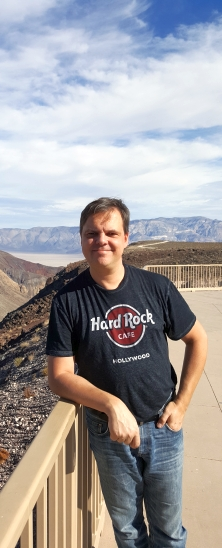

Journée Visu 2022
Mardi 28 juin 2022 à Bordeaux.
PROGRAMME 2022
- Lien du zoom pour suivre en ligne : https://u-bordeaux-fr.zoom.us/j/86765735103?pwd=L1VkdzlIaVU3ZklXMEJpai9abnA2UT09
- INSCRIPTION gratuite mais obligatoire
| Horaire | Description |
|---|---|
| 8:30 | Accueil |
| 9:00 | Introduction de la journée |
| 9:15 |
Keynote:
Dieter Schmalstieg (Graz University of Technology, Graz, Autriche)
"Opportunities and Challenges of Situated Analytics" |
| 10:15 | Pause |
| 10:35 |
Session Papiers: Applications
|
| 11:55 | Pause déjeuner |
| 13:20 |
Session Papiers: Visualisation scientifique
|
| 14:40 | Pause |
| 15:00 |
Session Papiers: Techniques de visualisation d’information
|
| 16:00 | Pause |
| 16:15 |
Panel de prospective
|
| 17:15 | Conclusions de la journée |
La journée annuelle du groupe de travail
Visualisation
du groupement de recherche informatique géométrique et graphique,
réalité virtuelle et visualisation (GdR IG-RV) a pour vocation de rassembler les acteurs académiques et industriels de la communauté française en visualisation. Cette journée permet d'échanger sur les
problématiques et les enjeux actuels et futurs de la visualisation.
Elle couvre entre autres la visualisation scientifique
(SciVis) et la visualisation d'information (InfoVis), appliquées dans
de nombreux domaines tels que la simulation numérique, la médecine
personnalisée, la cartographie ou encore l'intelligence artificielle.
Cette année, organisée par le CEA, l'INRIA et le LaBRI, la journée Visu2022 aura lieu le mardi 28 juin 2022 à l'amphithéâtre du LaBRI à Talence en Gironde près de Bordeaux et du bassin d'Arcachon.
Pr. Dieter Schmalstieg responsable de l’Institute of Computer Graphics and Vision et professeur à l’Université Technologique de Graz en Autriche introduira la journée par un exposé sur les opportunités et les défis de l’analyse située.
Appel à contribution
Sont admises des soumissions sur résumé (jusqu'a deux pages), en français ou en anglais, qui présentent des travaux originaux. Il peut s'agir de :
- travaux de recherche finalisés ou en cours, de projets ANR, européens ou autres, de retours d'expériences industriels, etc. Si une vidéo pré-enregistrée existe elle pourra être diffusée pendant la journée
- travaux qui ont été soumis (soumis à tout évènement de type conférence, workshop, meeting, sous toutes les formes usuelles : papier, papier court, poster, abstract ...) mais pas acceptés, et qui seront donc présentés dans le but de les améliorer en vue d'une nouvelle soumission ou tout simplement de «valoriser» l'investissement.
- travaux non encore soumis, et qui seront présentés en vue d'avoir un premier retour de la communauté.
Modalités de soumission
Merci de nous faire parvenir votre résumé par e-mail à
journeevisu2022@gmail.com avant le
vendredi 20 mai 2022 à 23h59 vendredi 27 mai 2022 à 23h59. Les notifications seront envoyées le
vendredi 27 mai 2022 Vendredi 3 juin 2022. Le titre de l'e-mail doit être "Soumission à la journée Visu 2022" avec en pièce jointe le fichier PDF de votre soumission ainsi que le format de présentation souhaité dans le corps de l'e-mail.
Template pour la soumission (Latex et word): Template (Latex et Word), Template (Overleaf).
Format de la présentation
Lors de la journée Visu, vous pourrez présenter votre soumission en français ou en anglais sous formes de présentation orale, de poster ou de démonstration.
Lors de votre soumission, merci d'indiquer quelle(s) forme(s) de
présentation vous choisissez. Vous pouvez combiner jusqu'à deux formes
de présentation. Il est possible que nous vous suggérions des
modifications en fonction des contraintes de temps et de place. Les
soumissions peuvent être rédigées en français ou en anglais et ne sont
pas anonymes. Un espace sera mis à disposition pour les
posters et les démonstrations.
Thématiques
Les thématiques couvertes par l'appel à contribution sont variées et incluront tout thème novateur en rapport avec la visualisation scientifique ou la visualisation d'information tels que :
* visualisation scientifique
* visualisation d’information
* visualisation de grandes masses de données et visualisation haute performance
* visualisation pour la médecine personnalisée
* visualisation et intelligence artificielle
* design de visualization
* visualization et storytelling
* visualisation in-situ
* visualisation analytique
* perception visuelle et visualisation
* interactions dans un contexte d'analyse visuelle
* évaluation de la visualisation
* couplage simulation / visualisation
* visualisation de données relationnelles (par ex.réseaux sociaux)
* fouille visuelle des données et techniques de navigation dans les entrepôts de données
* architectures client-serveur pour la visualisation de données distantes
* visualisation collaborative (colocalisée ou à distance, synchrone ou asynchrone)
* visualisation sur dispositifs nouveaux (par ex. murs d'écrans,
tablettes tactiles, montres intelligentes) et avec des dispositifs
d'interaction non conventionnels (par ex. capteurs 3D)
* méthodes topologiques pour la visualisation
* visualisation de données géolocalisées
* visualisation de données biologiques et moléculaires
* visualisation de données incertaines.
INSCRIPTIONS EN LIGNE
La journée Visu 2022 est gratuite et ouverte à tous dans la limite des capacités d'accueil. Pour assister à cette journée, inscrivez-vous avant le*** Formulaire d'inscription ***
KEYNOTE

Title
Opportunities and Challenges of Situated Analytics
Abstract
With the availability of inexpensive and powerful virtual reality (VR) devices, we can now observe a strong interest in immersive analytics, the combination of visual analytics with VR. However, situated analytics, the combination of visual analytics with augmented reality (AR) is progressing more slowly. A reason for this inertia may come from the specific technical challenges that come with situated analytics. However, there are also conceptual challenges in designing visualization interfaces that incorporate the real world, which can be unpredictable and uncontrollable by the visualization application. This talk explores some of the challenges of situated analytics, describes RagRug, a toolkit for situated analytics research, and tries to formulate a research agenda for this new exciting field.
Biographies
Dieter Schmalstieg is full professor and head of the Institute of Computer Graphics and Vision at Graz University of Technology, Austria. His current research interests are augmented reality, virtual reality, computer graphics, visualization and human-computer interaction. He received Dipl.-Ing. (1993), Dr. techn. (1997) and Habilitation (2001) from Vienna University of Technology. He is author and co-author of over 400 peer-reviewed scientific publications with over 20,000 citations and over twenty best paper awards and nominations. His organizational roles include associate editor in chief of IEEE Transactions on Visualization and Computer Graphics, associate editor of Frontiers in Robotics and AI, member of the steering committee of the IEEE International Symposium on Mixed and Augmented Reality, chair of the EUROGRAPHICS working group on Virtual Environments (1999-2010), key researcher of the K-Plus Competence Center for Virtual Reality and Visualization in Vienna and key researcher of the Know-Center in Graz. In 2002, he received the START career award presented by the Austrian Science Fund. In 2008, he founded the Christian Doppler Laboratory for Handheld Augmented Reality. In 2012, he received the IEEE Virtual Reality technical achievement award, and, in 2020, the IEEE ISMAR Career Impact Award. He was elected as Fellow of IEEE, as a member of the Austrian Academy of Sciences, the Academia Europaea, and the IEEE VGTC Virtual Reality Academy.
https://dieterschmalstieg.me
More information.
ORGANISATEURS 2022
Précédentes Journées Visu
- Journée Visu 2021: 8 juin 2021, Virtuelle
- Journée Visu 2020: 9 juin 2020, Virtuelle
- Journée Visu 2019: 17 mai 2019, Télécom ParisTech, Paris
- Journée Visu 2018: 25 mai 2018, EDF Lab, Palaiseau
- Journée Visu 2017: 7-8 juin 2017, IFP Energies nouvelles, Rueil-Malmaison.
- Journée Visu 2014 : 7 novembre 2014, Télécom ParisTech, Paris
- Journée Visu 2013 : 6 novembre 2013, Institut de Biologie Physico-Chimique, Paris
- Journée Visu 2012: 25 septembre 2012, Télécom ParisTech, Paris
- Journée Visu 2011: 12 octobre 2011, CEA, Bruyères-le-Châtel
- Journée Visu 2010: 5 octobre 2010, EDF, Clamart